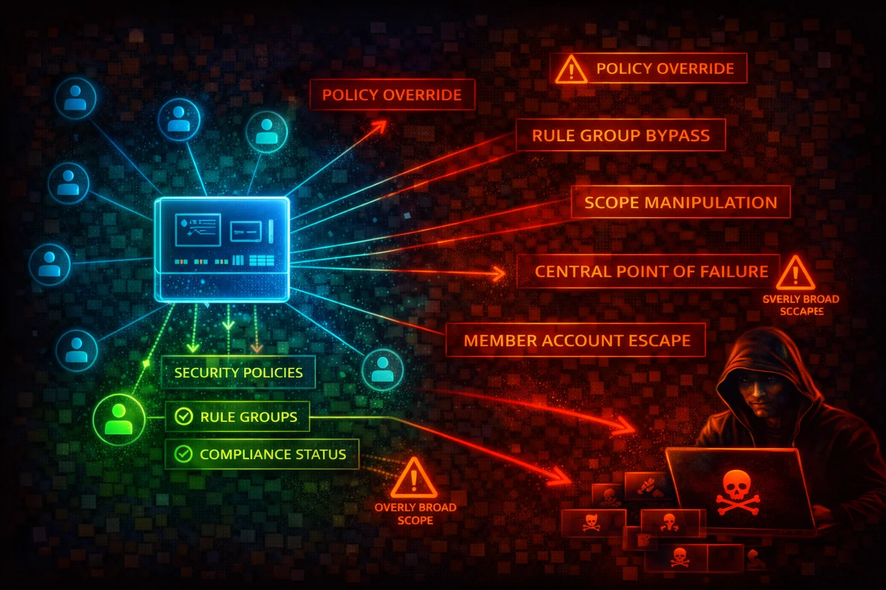

AWS Firewall Manager is a centralized security management service that lets you configure and deploy firewall rules and protections across multiple accounts and resources in an AWS Organization. It manages WAF, Shield Advanced, VPC Security Groups, Network ACLs, Network Firewall, Route 53 Resolver DNS Firewall, and third-party firewalls.
Firewall Manager enforces security policies across all accounts in an AWS Organization. Policies are automatically applied to new accounts and resources as they are added.
Policies can automatically remediate non-compliant resources. Scope is controlled via account inclusion/exclusion maps, resource tags, and resource types.
Firewall Manager is an organization-wide security control plane. Compromise of the FMS administrator account can silently remove WAF rules, security group restrictions, and Network Firewall protections across every account in the organization.
aws fms get-admin-accountaws fms list-policiesaws fms get-policy \
--policy-id a1b2c3d4-5678-90ab-cdef-EXAMPLE11111aws fms list-member-accountsaws fms get-notification-channelaws fms delete-policy \
--policy-id a1b2c3d4-5678-90ab-cdef-EXAMPLE11111aws fms delete-notification-channelaws fms disassociate-admin-accountaws fms list-admin-accounts-for-organizationaws fms list-compliance-status \
--policy-id a1b2c3d4-5678-90ab-cdef-EXAMPLE11111{
"RemediationEnabled": false,
"ExcludeResourceTags": true,
"ExcludeMap": {
"ACCOUNT": ["111111111111", "222222222222"]
}
}Remediation disabled, accounts excluded, and resources excluded by tag. Non-compliant resources are never fixed.
{
"RemediationEnabled": true,
"ExcludeResourceTags": false,
"DeleteUnusedFMManagedResources": true,
"IncludeMap": {}
}Remediation enabled, no exclusions, all accounts covered, orphaned resources cleaned up.
Limit fms:PutPolicy, fms:DeletePolicy, fms:AssociateAdminAccount to minimum principals. Use SCPs to block member account FMS writes.
Set RemediationEnabled: true on every Firewall Manager policy. Audit-only mode is useful during rollout, but production must enforce.
Use aws fms put-notification-channel to send compliance findings to an SNS topic monitored by your security team.
aws fms put-notification-channel \
--sns-topic-arn arn:aws:sns:us-east-1:123456789012:fms-alerts \
--sns-role-name FMSSNSRoleFMS depends on AWS Config to detect resource compliance. Ensure Config is enabled in every account and Region.
Alert on PutPolicy, DeletePolicy, AssociateAdminAccount, DisassociateAdminAccount, and DeleteNotificationChannel.
FMS policies are Regional. Create policies in every Region where you have resources, or deny resource creation in uncovered Regions.